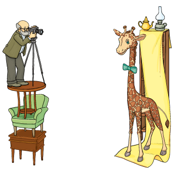

A zsiráf a fény-ké-pész-nél

Fénykép kellett a zsiráfnak,
fény-ké-pész-hez ment vasárnap.
– Le tud engem fény-ké-pez-ni?
– Kérem!
– Szépen tud ön fény-ké-pez-ni?
– Szépen.
– És a képet most csinálja?
– Nyomban!
– Van-e hozzá ma-si-ná-ja?
– Ott van!
– Nem fog a kép el-moz-dul-ni?
– Kár izgulni!
– És elférek majd a képen?
– Csak a fele fér rá, kérem.
– S mi lesz a másik felemmel?
– Hát, azt majd külön veszem fel.
– De remélem, nem lesz drága.
– Két kép ára.
– Hátha elférek egy képen!
– Sem-mi-kép-pen!
– Nos, ha másképpen nem megy: rajta!
Csett: a lába.
Csett: a torka.
– Kész!
Fél meg fél az egy egész.
Uram, roppant vonzó rajta!
(Jerzy Kern)